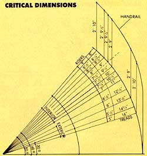

Available headroom and the horizontal run of the stair depend on its angle. Removing just one riser and tread combination, shown at left, yields nearly one foot of additional overhead room and more than two treads' worth of floor space.